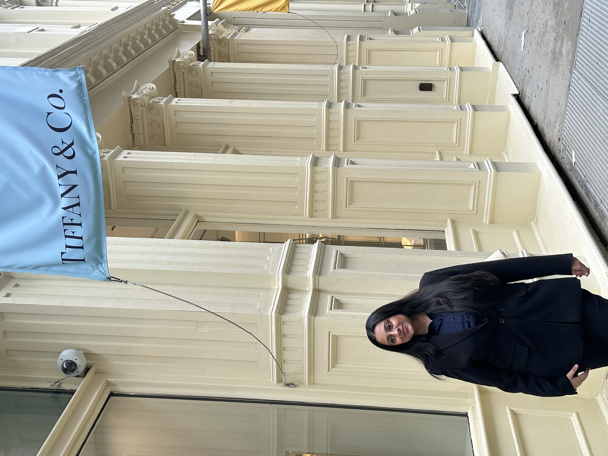
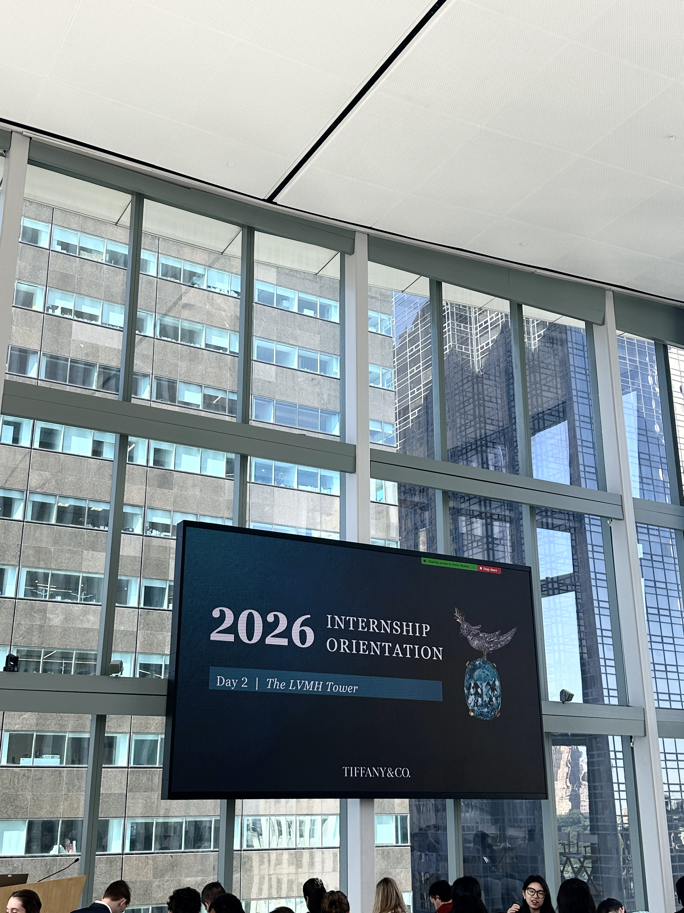
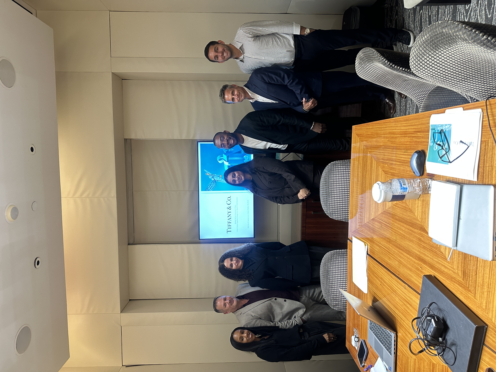
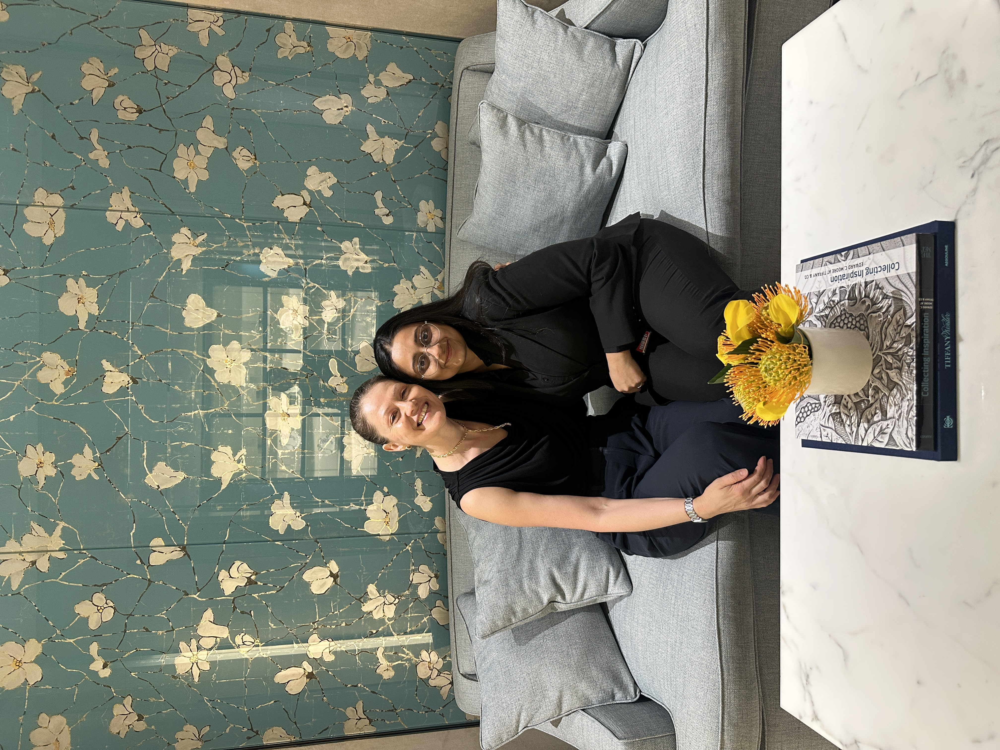
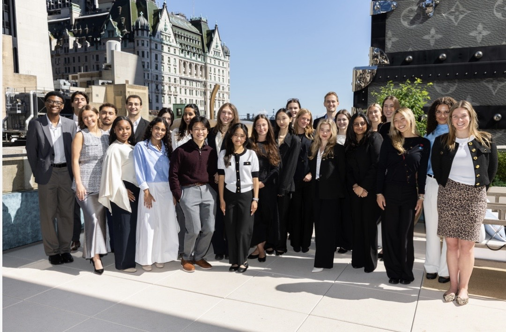

Curiosity
Tiffany encouraged questions and gave me the opportunity to learn from different people, roles, and areas of the business.
New York City · June - August 2026
An experience that aligned
One of the things that made my experience at Tiffany especially meaningful was how closely the values I already bring to my work aligned with the culture I experienced there. I value attention to detail, learning from the people around me, building genuine relationships, and taking pride in the work I do.
Tiffany gave me an environment where curiosity, care, and continuous learning felt genuinely important.
Tiffany encouraged questions and gave me the opportunity to learn from different people, roles, and areas of the business.
Meeting the people behind the brand reinforced how much knowledge, care, and personality shape the client experience.
From jewellery and product presentation to welcome, storytelling, and service, every detail had purpose.
The experience pushed me to look beyond my own role and understand how a luxury business comes together.
My experience
Growing up in India, jewellery was always familiar through our family jeweller and the personal relationships that came with it. Tiffany was the first luxury jewellery brand that became personally significant to me. Being able to step inside the brand and see what I had studied from the outside come to life was incredibly meaningful.
I saw how product, High Jewelry, retail, client experience, operations, and the teams behind the scenes work together to create one cohesive experience. It taught me that luxury is an ecosystem built on trust, shared knowledge, and care for the individual client.
My time at Tiffany made something I had spent years studying feel real. I left with a deeper appreciation for the people and work behind the promise of the blue box.
In moments

The beginning
Walking through the doors of Tiffany & Co. brought years of studying luxury to life. It was my first opportunity to see how a global house makes each encounter feel personal.

Learning in context
Orientation created a wider view of the people and teams behind the house, and set the tone for an experience grounded in questions, observation, and continuous learning.

A connected ecosystem
Conversations with the team made it clear that product, High Jewelry, retail, client experience, and operations are all connected by shared knowledge and trust.

People make the promise real
Their generosity, warmth, and attention to detail showed me that the blue box is only the beginning of the story. It is people who make a luxury promise feel real.

What I learned
Understanding the history and meaning behind a product allows you to make the experience more personal for a client.
Luxury is deeply personal. Listening carefully and understanding the individual can be as important as knowing the product.
From product and High Jewelry to retail, client experience, operations, and the teams behind the scenes, every function contributes to the final experience.
A luxury brand cannot deliver its promise through one department alone. Teams rely on one another, share knowledge, and trust each other’s expertise to create one cohesive experience.
Exposure to High Jewelry and VIC experiences showed me the importance of trust, discretion, storytelling, and understanding the individual client.